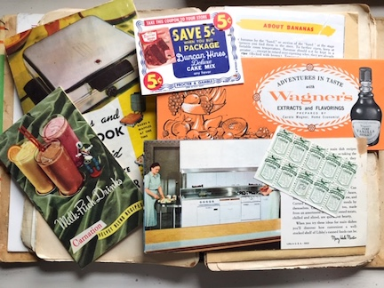
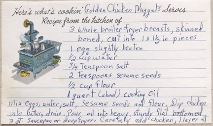
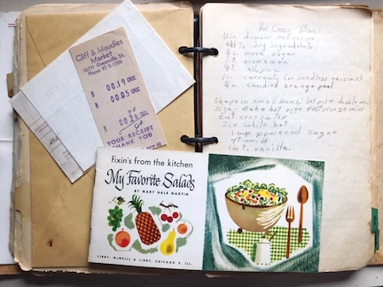

Golden Chicken Nuggets
- 3 Boneless, Skinless Chicken Breasts, Cut into 1 x 1/2 Pieces
- 1 Egg, Slightly Beaten
- 1/2 Cup of Water
- 3/4 Teaspoon of Salt
- 2 Teaspoons of Sesame Seeds
- 1/2 Cup of Flour
- 1 Quart (a bowl) of Cooking Oil
instructions
- Pour oil into a heavy, flat bottomed 3 qt. saucepan or deep fryer, heat over medium-high heat
- Mix the eggs, water, salt, sesame seeds, and flour to create a batter
- Dip the chicken pieces into the batter and drain excess
- Carefully add battered chicken pieces, 1 layer at a time
- Fry the chicken pieces 3-7 minutes until golden on each side, and remove to paper towel to absorb excess oil
Homemade Noodles
- 1 Egg
- 1/2 Teaspoon Salt
- 2 Tablespoons Milk
- 1 Cup Flour
instructions
- Combine beaten egg, salt, and milk; add 1 cup sifted flour (or enough for dough to be stiff)
- Roll dough until very thin on a floured surface; let stand for 20 minutes
- Roll up loosely; then slice 1/4 inch wide; unroll, spread out and let dry for 2 hours
- Drop noodles into boiling soup or boiling salted water and cook uncovered for 10 minutes
Macaroni & Cheese
- 1 1/2 Cups Elbow Macaroni
- 3 Tablespoons Butter
- 3 Tablespoons Flour
- 2 Cups Milk
- 1/2 Teaspoon Salt, Dash Pepper
- 2 Cups Shredded Cheddar Cheese (and some for topping)
instructions
- Cook macaroni in salted boiling water until al dente, drain
- Melt butter; blend in flour then add milk and cook while stirring until thick
- Add salt & pepper and cheddar cheese; stir until cheese is melted
- Mix sauce and macaroni then pour into casserole baking dish; top with additional shredded cheese
- Bake in preheated oven (350°) until bubbly and browned - approx. 45 minutes
Tamale Pie
- 1 Cup Chopped Onion
- 1 Cup Chopped Green Pepper
- 3/4 lb. Ground Beef
- 2 8-oz. Cans of Tomato Sauce (2 cups), Seasoned to Taste
- 1 12-oz. Can of Whole-Kernel Corn, Drained
- 1 Cup Black Olives, Whole
- 1 Clove Garlic, Minced
- 1 Tablespoon Sugar
- 1 Teaspoon Salt, Dash of Pepper
- 2 to 3 Teaspoons Chili Powder
Corn-Meal Topper
- 3/4 Cup Corn Meal
- 1/2 Teaspoon Salt
- 2 Cups Cold Water
- 1 Tablespoon Butter
instructions
- Preheat Oven to 375°
- Cook onion and green pepper until just tender, add meat and brown lightly
- Add the tomato sauce, corn, olives, garlic, and spices, simmer for 20 - 25 minutes
- While beef mixture is simmering, make the cornmeal topper: Stir corn meal and salt into cold water. Cook and stir until thick, add butter
- Pour beef mixture into a greased baking dish, spoon cornmeal on top
- Bake in preheated oven for 40 minutes